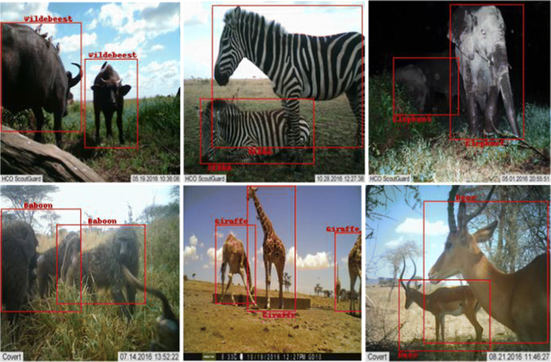

Hi, my name is
Laura Ozoria.
I'm a software engineer studying Computer Science & Engineering and Film & Media Studies at Bucknell University. Currently, I'm focused on building accessible web applications and tools that make complex technology more intuitive for everyone.
Get In TouchAbout Me
I'm a junior at Bucknell University studying Computer Science & Engineering and Film & Media Studies. The combination reflects what I value in software engineering: technical excellence, creative problem-solving, and thoughtful design. I'm particularly passionate about digital accessibility and user-centered design. Currently, I'm developing a web-based interface for KALMUS, a film color analysis toolkit, to make the research tool more accessible to students and researchers beyond those comfortable with GitHub and Python. My film background has shaped how I approach engineering. I think about storytelling and user experience, not just functionality. I get excited about solving hard problems, but I care just as much about making sure what I build feels good to use.
Here are a few technologies I've been working with recently:
- Python
- JavaScript
- Java
- C++
- React
- Flask
- Spring Boot
- TensorFlow
.jpg)
Experience
Software Programmer for Color Analysis Program
August 2024 - Present
- Develop a web-based version of KALMUS film analysis software using HTML, Flask, and Bootstrap, expanding accessibility to student researchers
- Expand a Python film color analysis toolkit by developing 5+ new features used in the web adaptation of the package
- Enable real-time film metadata access by designing a SQLite database integrated with the IMDb API
Data Science Student Fellow @ Bucknell University
January 2026 - Present
- Collaborate with stakeholders and data science mentors on semester-long applied data science projects, delivering data-driven insights to support institutional decision-making
- Extract and process audio data from video content using Python, Excel, and Premiere Pro to enable quantitative analysis for client stakeholders
- Support data science outreach initiatives by promoting student engagement in workshops and seminars across campus
Engineering Peer Mentor @ Bucknell University
August 2024 - Present
- Guided 5 students through resume development and LinkedIn profile optimization to strengthen their professional branding and career preparation
- Maintained consistent engagement through weekly meetings throughout the semester, with additional availability for on-demand academic support in physics and computer science
Virtual Reality Research Assistant @ Bucknell University
June - July 2023
- Designed an interactive colorimetry learning program in Unity to teach primary/secondary color theory and color mixing principles through hands-on VR experiences
- Created Unity-based VR learning tool for Meta Quest 2 platform, enabling standalone access to interactive color theory education
Projects
-
Movie Scheduler
A web application built during a hackathon that helps groups find the perfect time to watch movies together. Features Google Calendar integration for real-time availability matching and automated scheduling.
- Java
- Spring Boot
- JavaScript
- Google Calendar API
.png)
-
Stardew Valley Simulation
A 2D farming simulation game built with object-oriented design principles and Agile methodology. Features multiple gameplay mechanics including farming, inventory management, and resource collection.
- Java
- JavaFX
- JUnit
- UML

-
Animal Identifier
A convolutional neural network trained to classify animal species with 80% accuracy. Includes comprehensive performance analysis using confusion matrices and accuracy metrics.
- Python
- TensorFlow
- CNN
- Machine Learning
